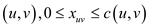
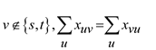
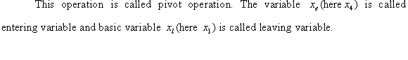
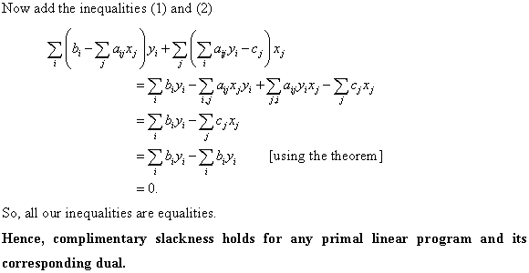
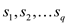
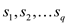
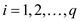
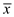
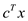
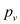

a.
A linear program is generally a maximization or minimization problem and there can be either equations or the inequalities for the constraints.
Various algorithms are there for solving the linear programs, among them the most standard algorithm is the SIMPLEX algorithm. It generally has a fast running time. There is also algorithm whose running time is in polynomial, as ELLIPSOID algorithm. It is slower in practice.
Here to show that the algorithm for linear program can be used to solve the linear inequalities feasibility problem; consider the ELLIPSOID algorithm, it can be used to solve the feasibility problem. The notion is to have a big ellipse, that is the ellipse in the higher dimension. It must lie in the feasible region. Then we will test that the ellipse violates any constraint or not.
If there is no violation then the work is done. But if there is violation then look for it.
So in this way it is possible to know that the solution lies in the ellipse. And this step is repeated to create a smaller ellipse and so on. It has an advantage that you only have to show that the current solution violates the constraints or not.
So, if there is an algorithm for linear program, it can be used to solve the Linear Inequality Feasibility Problem.
b.
In this problem to show that there is an algorithm for linear inequality feasibility problem it is possible to use it to solve the linear program. For this, consider an example in which we have the inequalities procedure and on the basis of that the linear program is formulated,
Consider the example of maximum flow problem for this,
Network flow model: In which it is to be determined the maximum flow from the network.
Inequality constraints:
1. For the edge  set a
variable and consider
only the positive flow in order to have the fewer constraints.
set a
variable and consider
only the positive flow in order to have the fewer constraints.
Linear program:
Objective:
The objective is to find out the maximum possible flow through the edges of the flow network.
That is the objective function, given by:
Maximize:
(The flow into the t is maximized minus any flow out from the t)
Constraints: (Below mention point 2. and 3. are constraints)
2. For all of the edges there is

(Capacity constraints)
3. For all of the vertices there is:

(Conservation constraints)




Integer Linear Programming
Linear Programming:
Linear programming is a way of achieving the maximum possible outcome from a set of resources that are represented as an integrated mathematical design.
In the technical terms, the linear programming is a way to achieve optimum results from the linear programming problems. This optimization is subject to a few constraints.
A linear program is commonly in the below given form:
In a standard form for a linear program, there is a set of
p real numbers that are , another
set of q real numbers that are and a set
of
, another
set of q real numbers that are and a set
of real numbers
that are
real numbers
that are where,
where,


Now the objective is to find p real numbers such
that
such
that
Maximize:
… … (1)
And that is subject to,
 … … (2)
… … (2)
 … … (3)
… … (3)
The first expression is called the objective function. The second and the third expression show the constraints.
Integer Programming:
This is just like a linear program with an extra rule. In this the variable are allowed to take only integer values. With this constraint, this programming is also known as the Mixed Integer Liner Programming (MILP). Many, but not all of the conditions that are true for the common linear programming, do hold for the Mixed Integer Linear Programming.
In the general form the integer program can be expressed as:
Minimize
Subject to condition,
 is
integer.
is
integer.
a.
Here, to show the weak duality for the integer linear program; as in the question, lemma (29.8) should be referred to.
The theorem defines that the objective function of any linear program that is in its primal form is always bounded for its upper limit by the objective function of its dual form. The value of the objective function for the primal form is always smaller than or equal to the value of the objective function for the dual form.
Considering the standard form of the linear programming there
are  real numbers
that are and the
m-real numbers and
real numbers
that are and the
m-real numbers and
 -real
number for the
value of and the
value of and here
are to be found real
numbers with the
linear program as,
-real
number for the
value of and the
value of and here
are to be found real
numbers with the
linear program as,
(a) Primal linear program:
Maximize-
 … … (1)
… … (1)
Subject to condition-
 for
… … (2)
for
… … (2)
 for
… … (3)
for
… … (3)
Equation (1) represents the objective function for the integer programand the equation (2) and equation (3) represent the constraints for the objective function.
(b)Dual linear program:
When a dual linear program is referred then the original linear program is called as the primal. Dual for any linear program is just an image of the primal form of it. If the dual is found for a linear program that is already in the dual form, it yields the primal form of itself.
The dual form can be expressed mathematically as:
Minimize-
 … … (4)
… … (4)
Subject to condition-
 for … …
(5)
for … …
(5)
for … … (6)
In order to form the dual the maximizationis altered to minimization and the roles of coefficients on the right hand side and theobjective function are exchanged.
Now as considered in the required lemma here is which is a
feasible solution for the concerned primal linear program
(a) and  be the
feasible solution for the dual of the same.
be the
feasible solution for the dual of the same.
Considering the above:
The relation can be obtained by using the inequalities of dual linear program (5)
Now, using the in the primal (2)

b.
It is to be shown that the duality does not always hold for the integer linear program. For the duality theorem refer to the section 29.4 of the textbook.
The simple statement representing the duality theorem is as below:
If there is an optimal solution for the primal form of the linear program and so does for the dual form of the linear program, then the values of the objective function of both of the primal program and dual form would be equal.
Considerthe issue:
They will form a weak dual pair if
For all
 and
and
When the condition a=b is fulfilled there would be a strong dual pair. And the proposition that
And the linear program
 Forms a pair of weak-dual problem So it shows that the weak duality
hold for the integer linear program but it is not true for the
strong duality. Hence the condition for duality in the integer
linear programming does not hold.
Forms a pair of weak-dual problem So it shows that the weak duality
hold for the integer linear program but it is not true for the
strong duality. Hence the condition for duality in the integer
linear programming does not hold.c.
In the given problem, there is an assumption that the both the primal integer and the dual integer program are both feasible and bounded. And various variables are used as:
1. P: - optimal objective value of primal of the linear program.
2. D: - optimal objective value of dual of the linear program.
3. IP: - optimal objective value of primal of the integer linear program.
4. ID: - optimal objective value of dual of the integer linear program.
In the previous sections both of the weak duality theorem and the strong duality theorems have already been proven. So, with reference to the theorem there holds the condition that:
1. As per the weak duality theorem of the linear programming the value of the objective function for the dual always dominates the value of the objective function of the primal form.
That is:
.
2. According to the strong duality theorem solutions of primal form of the linear program and dual form of the same linear program are optimal only when their values are equal.
That is:
... … (1)
Here the solution is feasible so, the given relation is obtained by the using the above specified theorem
Using the weak duality theorem,
… … (2)
Now as the integer programming takes only the integer values the optimal solutions for the integer solution would be less in amount. From here, the conclusion that the primal form of the linear programming would be greater than the primal form of the integer program and the dual for the linear program would be smaller than dual of the integer program.
… … (3)
… … (4)
Hence the following relation can be established by using all four of the above mentioned equations
.
Proof of Farkas’ Lemma
Linear Programming:
Linear programming is a way of achieving the maximum possible outcome from a set of resources that are represented as an integrated mathematical design.
In technical terms, linear programming is a way to achieve optimum results from the linear programming problems. This optimization is subject to a few constraints.
Farkas’ lemma:
It is a fundamental tool useful for the proof of linear programming duality theorems. This is also known as the fundamental theory of linear inequalities. It is a mathematics result which says that a vector is either in a convex cone or a hyper plane, which exist to separate the vector from the cone. The illustration of Farkas’ lemma is as follows: Suppose there is a matrix A with dimensions and the vector c that is an n-vector. In that case of a one system, the form is And the other is Then only one of them can have a feasible solution. It is not possible for both of them to have a feasible solution at the same time. It is considered as an example of a theorem of the alternatives. This theorem states that among the two systems, one of them is the solution. There will be no possibility of both of them or none, as a solution. Farkas’ lemma has a wide range of applications in linear programming. It is used in proving the problems related to strong or weak duality theorem. It is also used as a basic game theory.Proof:
According to the question it is to be proved that given A which is a matrix and the c is an n-vector. Then the Farkas’ lemma states that, among two systems, exactly one of the systems can be solved:
And
Where x is an n-vector and the y is an m-vector.
The two statements cannot hold simultaneously.
Consider that
Such that
And
Such that,
And then
is a contradiction.
Consider that,
Then there is such that if and only if
.
From the theory of polyhedron and duality,
The representation of all convex polyhedral cones is given below:
For some matrix, it has been found out that for cones, the concept of polyhedral and finitely generated are equivalent as per the WEYL’s theorem.
The theorem says that:
A cone C is polyhedral if and only if it is finitely generated, that is, the cones are produced by a finite number of vectors.
Hence if and only if among the row of A such that >0.
Clearly, as for each
column of A, so
for each
column of A, so
Hence, the required condition is fulfilled that is desired.
Minimum Cost Circulation
For a better understanding of a minimum cost circulation, knowledge of various terms used in it must be known such as network, circulation etc., to illustrate which, assume a network having a source and a link. The network consists of various nodes.
A flow network is nothing but a directed graph of vertices and edges. Each of the graph edge has a capacity. The capacity defines the data value that can be moved through that edge.
The capacity is always greater than 0. One more thing is that if there is an edge going from a vertex v1 to vertex v2 then no edge can go from v2 to v1.
A flow which is balanced at each node of the network is termed as a circulation. The cost of the circulation is identified with the cost of flow in the network. Minimum cost circulation is to be dealt with, here. It is a circulation which has the smallest possible cost in the network. In the network, there is no restriction on the network flow. Similar to the flow networks, minimum cost circulation problem must abide by the flow and capacity constraint for the network.a . Consider a graph G (V, E); in this, V represents the set of vertices and E represents the set of edges. Assume the cost of each edge which denotes the cost of transportation of one unit along the edge in the graph.
Let and
be
the lower and the upper bound capacity of the flow of the network
along the edge and let
s (u) be the supply of the node u and
 indicates the units of flow which are sent over the edge.
indicates the units of flow which are sent over the edge.
The linear program is as:
Minimize-
… … (1)
Subject to condition-
for all … … (2)
for all  … …
(3)
… …
(3)
Where,
… … (4)
Here, the constraints (2) are the flow conservation constraints. The total amount of flow and entering of the nodes are represented by the two sums in (2). Thus the flow conservation constraint expects that the outgoing flow less the incoming flow, levels the supply and demand of the node respectively for every node. The constraint (3) is the capacity constraint which says that for each of the edges, the flow ranges between the lower and the upper bound.c. To find the Maximum Flow Problem as Minimum cost circulation:
A graph  is given in
which the V represents the set of vertices and E
represents the set of edges. It is also given that the source
s and the sink t and the cost c in the network
G.
is given in
which the V represents the set of vertices and E
represents the set of edges. It is also given that the source
s and the sink t and the cost c in the network
G.
So an edge can be summed up to the graph.
Now define the cost of the edges in the maximum-flow problem to
That is in turn equal to:
The capacities on the edge are such that.It implies that the direction of flow is from t to s.
So there is one-to-one correspondence between the circulations in the new graph and the flow in the original graph G. This correspondence satisfies all the flow conservation constraints in.
The cost of the circulation in the new graph is equal to the minus the net flow from s or into the t in the original graph.
The formulated form would be as below:
Minimize,
… … (5)
Subject to:
For all … … (6)
For all … … (7)
Hence, the maximum flow problem in the original graph G is equivalent to the minimum cost circulation problem in the new graph.
Hence, a solution from a maximum-flow problem to the minimum-flow problem can be obtained.d. To find the Single Source Shortest Path Problem as Minimum Cost Circulation Problem:
Consider the graph G (V, E) where V represent the set of vertices and the E represents the set of edges. It is also evident that a source s and the destination t, and d is computed which is the weight of the shortest path from s to t. Here w is the weighted function such that w:
.
Linear program:
1. A new variable  is introduced for each vertex v that is, the weight of the shortest path from the source s to vertex v.
2. Minimize
… … (8)
Subject to the conditions:
For all … … (9)
… … (10)
So, the above formulates the single source shortest path problem as the minimum cost circulation problem.